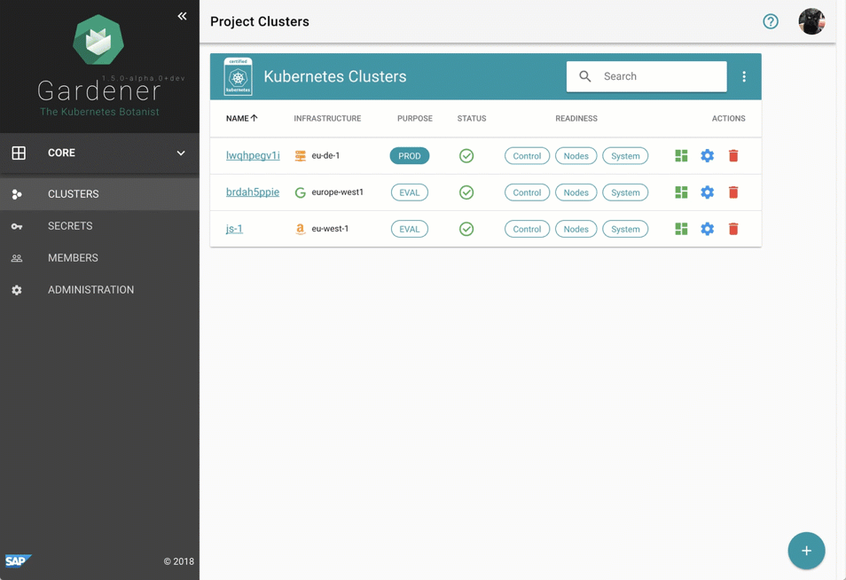

Many Open Source tools exist which help in creating and updating single Kubernetes clusters.
However, the more clusters you need the harder it becomes to operate, monitor, manage and keep all of them alive and up-to-date.
And that is exactly what project Gardener focuses on.
Our Mission
100%
Kubernetes
Inspired by the possibilities of Kubernetes and the ability to self-host,
the foundation of Gardener is Kubernetes itself. Gardener applies a special
pattern catering to the needs of operating a huge number of clusters with
minimal total cost of ownership.
Overall, reusing Kubernetes primitives in Gardeners core architecture simplifies
deployment, scaling & patching/updating of all control planes under Gardener's
management.
100%
Fast & Simple
We agree that cloud native will become the foundation and the de facto standard for shipping software fast, simple and reliable
using Kubernetes as the new "virtualisation" & deployment fabric/underlay.
We expect that Kubernetes will become a forcing function.
Create clusters via self service
Simple and powerful
Despite requiring only the familiar kubectl command line tool for managing all of
Gardener, we provide a central dashboard for comfortable interaction. It enables
users to easily keep track of their clusters’ health, and operators to monitor,
debug, and analyze the clusters they are responsible for.

More focused on the duties of developers and operators, the Gardener command line client
gardenctl simplifies administrative tasks by introducing easy higher-level abstractions
with simple commands that allow to condense and multiplex information & actions from/to
a set of seed and shoot clusters.
The clusters are self-healing, auto-scaling - and if you choose to - also auto-updating. The Gardener will show you details
on your cluster like the Kubernetes dashboard URL or the credentials you need to access it via kubectl.
start contribute
Project members
SAP is working on Gardener since mid 2017 and is focused on building up a project that can easily be evolved and extended.
Consequently, we are looking for further partners and contributors to the project now. As outlined above, we completely rely on Kubernetes primitives, add-ons, and specifications and adapt its innovative cloud native approach.
We are looking forward to aligning with and contributing to the Kubernetes community, especially with the upcoming cluster and machine specifications from SIG Cluster Lifecycle.
Feedback
The Gardener is fully Open Source and developed in the public on GitHub.
Feedback is always welcome. Please report bugs or suggestions about our Kubernetes clusters as
such at the gardener project and about
the user interface at the dashboard project.
Start Contributing
If you also see the potential of the Gardener project then please learn more about it on GitHub.